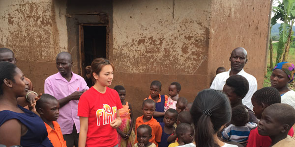

目前服務國家肯亞及烏干達，除了當地使用之國家語言，英語亦是官方語言。服務期間因有許多行程需要以英文教學及分享，所以基本的英文溝通能力是需要的，當然我們的肢體語言也是個很棒的幫助，報名前一定要先評估過自己的狀況，若是害羞到連開口的勇氣都沒有，可能就要再考慮一下囉！
認同舊鞋救命成立宗旨，且不排斥基督信仰。有清沙蚤之行程需全程協助配合，評估個人身體狀況可接受後再報名。
國際志工將會跟著舊鞋救命一同前往非洲需要救助的地區，您將需自行支付大部分的團費，但我們會提供給您所有行前，當地執行公益的知識與資源。
基督徒為優先，但如果對基督信仰沒有排斥，或是非常有興趣，希望對此信仰有更多認識，也歡迎報名參加。
國際志工將會跟著舊鞋救命一同前往非洲需要救助的地區，您將需自行支付大部分的團費，但我們會提供給您所有行前，當地執行公益的知識與資源。

客戶自行編輯區域
客戶自行編輯區域

報名流程
1.線上報名
(上傳護照影本)
(上傳護照影本)
2.繳報名費
3.繳清團費
4.機票開票
（旅行社）
（旅行社）
5.辦理簽證、醫藥、保險
6.行前說明會與其他事項
- 請選擇梯次並填表報名，額滿截止。
- 填表報名完成後，將在3-5天內提供匯款資料至報名者信箱，請於一週內將報名費NTD$10,000元匯款收據或帳號後五碼回傳至指定Email信箱(報名費將抵扣團費)，以保留報名資格，經舊鞋救命回信確認後即報名成功。
- 報名成功後，請於收到成團通知後一週內將團費全額繳清。（若有困難者請另行提出，報名費含當地交通接送費、住宿、服務期間餐飲、醫療用品、行前培訓及相關行政處理等費用，不含機票費用。）
- 機票費用：可能視開票日期有所變動，一般票價約落於NT$35,000 ~ $50,000之間；本會將於確定出團後統一向旅行社處理訂票事宜，費用屆時將通知各位參加者逕向旅行社給付，無需事先繳交給本會。
- 簽證費用：肯亞/烏干達電子簽證必須於出發前線上申請，同時刷卡付費(限Master或Visa卡)，簽證費用為美金$51(含系統服務費)，另可能須付刷卡手續費(約美金$2)。另外，若搭乘班機於中國境內轉機，持臺灣護照者則必須持有臺胞證（無需加簽）。
- 其餘關於預防接種、旅遊保險或當地相關注意事項，將Email寄發書面資料、並於行前說明會時統一說明。
注意事項
- 報名前務必詳讀注意事項及活動須知，如與原期待不符或有落差，請斟酌後再報名喔！
- 以上團隊皆以東非肯亞及烏干達為主要出隊地點。
- 最低成團人數為6人，最多10人，如因人數不足而無法成團，將全數退回押金，或直接更改至其他梯次報名使用。
- 報名成功以優先繳交押金者為主，若報名後經通知繳交押金一週內尚未繳款，將把名額直接留給候補報名者。
- 團費部分，協會無提供刷卡服務，所以一律採用匯款方式。
- 報名繳交費用後，如因個人因素而取消行程，恕不退款。
- 如遇航空公司調整班機或當地接洽單位調度因素，在不影響實際工作天數與內容前提下，將會更改出隊時間，更改時間約為前後1-3天。
- 若有不可抗力之因素(如天災、當地局勢等)，舊鞋救命將保留更動出隊日期之權利。
- 非本國報名者或有特殊原因無法與團隊一同從桃園機場(TPE)出發之成員，經舊鞋救命同意後可自行購買機票，並於抵達日與團隊於目的地之機場會面即可。
- 如有需延後行程者，舊鞋救命團隊一律回到當地機場後才可自行活動，但後續行程舊鞋救命不負擔其責任和風險。
活動需知
- 活動內容或順序亦有可能應當地需求適時調整，團長屆時會做詳細說明。
- 肯亞及烏干達團，行程內容皆相同，除服務地點、國家不同。
- 服務期間，禁止抽菸、喝酒以及違反當地之規定，如有任何違規行為，全權由團長處理。
- 行前說明會將於確定成團後，出發前三週之週六舉辦，所需用時間為一整天，敬請參與之團員務必先將時間保留，以利通知各項事前準備，不可缺席。
活動費用
出團前須繳付給舊鞋救命協會之費用
***團費NT$35,000元，包含抵達當地交通接送費、住宿、服務期間餐飲、醫療用品、行前培訓、相關行政處理費用、及出團期間保險費用。
***填表報名完成後，將在3-5天內提供匯款資料至報名者信箱，請於一週內將報名費NTD$10,000元匯款收據或帳號後五碼回傳至指定Email信箱(報名費將抵扣團費)，以保留報名資格，經舊鞋救命回信確認後即報名成功；如因自然因素、或是人數不足無法成團，協會將會全額退還，但若是本身無法配合當次報名的行程，可將押金挪至下次報名使用，
或選擇讓這筆資金成為舊鞋救命的奉獻，讓我們用於各計畫及物資送至非洲之貨櫃運費喔！
退費方式
| 距活動開始前 | 退費比例 |
|---|---|
| 30天 | 70% |
| 15天 | 50% |
| 7天 | 0% |
- 活動開始前7天內，恕不退費，但可保留參與下梯次活動之資格（可抵團費三萬五千元）。
- 可本人至協會辦理退費，或由本會代為退費至帳戶（需另扣匯款手續費）。
- 若因人數不足梯次未開成，保留下梯活動資格或報名費全數退回。
- 因涉及保險及相關事務，活動期間不能與會者，不得由他人頂替。
客戶自行編輯區域
必備用品
- 防蚊液（非洲部分蚊蟲帶有疾病，防蚊措施需要做好）
- 簡單醫藥物品 （止痛藥、藥膏、ok繃等物品）
- 外套 （早晚溫差大）
- 濕紙巾、乾洗手劑（許多地方沒水洗手）
- 防曬物品 （防曬乳、帽子）
- 乾糧
- 手電筒 （當地常停電）
- 筆記本、日記 (記錄每天的生活)
- U形頸部枕頭 （個人喜好，當地坐車時間久，路不平順，也可用來當坐墊）
- 可穿著平時不常使用的衣物，離開前可清洗留下，成為非洲居民的祝福，也能減輕行李重量
客戶自行編輯區域
報名之前
參與本計畫需要具備怎麼樣的特殊專長或能力? 或是建議怎麼樣的人參與本計畫？
舊鞋救命國際志工團，初衷為希望帶更多的志工進入非洲，所以歡迎有各樣專長的朋友加入，與我們看見當地的需要，並且透過團隊合作，協助各計畫的進行，建立不一樣的情感和經歷，回國後也能與身邊的朋友分享。
參與本計畫需要具備怎麼樣的特殊專長或能力? 或是建議怎麼樣的人參與本計畫？
舊鞋救命國際志工團，初衷為希望帶更多的志工進入非洲，所以歡迎有各樣專長的朋友加入，與我們看見當地的需要，並且透過團隊合作，協助各計畫的進行，建立不一樣的情感和經歷，回國後也能與身邊的朋友分享。
參與本計畫需要具備怎麼樣的特殊專長或能力? 或是建議怎麼樣的人參與本計畫？
舊鞋救命國際志工團，初衷為希望帶更多的志工進入非洲，所以歡迎有各樣專長的朋友加入，與我們看見當地的需要，並且透過團隊合作，協助各計畫的進行，建立不一樣的情感和經歷，回國後也能與身邊的朋友分享。
參與本計畫需要具備怎麼樣的特殊專長或能力? 或是建議怎麼樣的人參與本計畫？
舊鞋救命國際志工團，初衷為希望帶更多的志工進入非洲，所以歡迎有各樣專長的朋友加入，與我們看見當地的需要，並且透過團隊合作，協助各計畫的進行，建立不一樣的情感和經歷，回國後也能與身邊的朋友分享。
客戶自行編輯區域